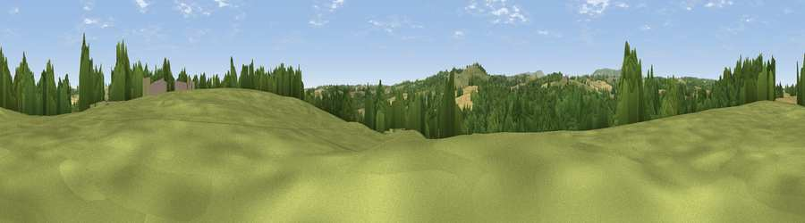

Viewpoint near Chorley
#31645 in England · top 72% of its area beats it · near ChorleyWhere it is
The exact computed spot (SO 70975 84225). Click the marker for map links.
The view, rendered

A 360° render of this exact spot computed from the terrain model, tree cover and land cover — summer colours, afternoon light, calibrated against photographs of famous viewpoints. Real trees, hedges and buildings will differ in detail.
The panorama
Grey silhouette: terrain skyline in each direction (720 bearings, Earth curvature and refraction included). Dashed green: skyline with trees (+15 m) and buildings (+8 m) as obstacles. Blue strip: how far the ground is visible on each bearing.
Where the view opens
Wedge length = distance to the farthest visible ground on that bearing (vegetation-aware). Rings at 10, 25 and 50 km.
What fills the view
37% grassland · 36% woodland · 26% cropland
Angular shares of the visible panorama (visual magnitude), not map area. Landscape diversity 0.48 (0–1 Shannon).
Key numbers
More beautiful places nearby
The staircase of upgrades: each row has a higher view potential than everything closer. Driving times are estimates from straight-line distance, calibrated against real road routing — check an actual route before setting out.
| Place | Direction | Drive | Score |
|---|---|---|---|
| Viewpoint near Highley | ESE · 1 km | ~3 min | 39.4 |
| Viewpoint near Chorley | SSW · 3 km | ~6 min | 60.6 |
| Knowle Hill | SSW · 3 km | ~7 min | 75.5 |
| Viewpoint near Burwarton | W · 11 km | ~21 min | 83.4 |
| Titterstone Clee | WSW · 13 km | ~24 min | 83.8 |
| Viewpoint near Little Wenlock | NNW · 25 km | ~41 min | 86.6 |
| North Hill | S · 38 km | ~57 min | 86.8 |
| Worcestershire Beacon | S · 39 km | ~59 min | 87.1 |
52.45520, -2.42856 · source: screening · position refined by local search. Computed location — check access rights before visiting.